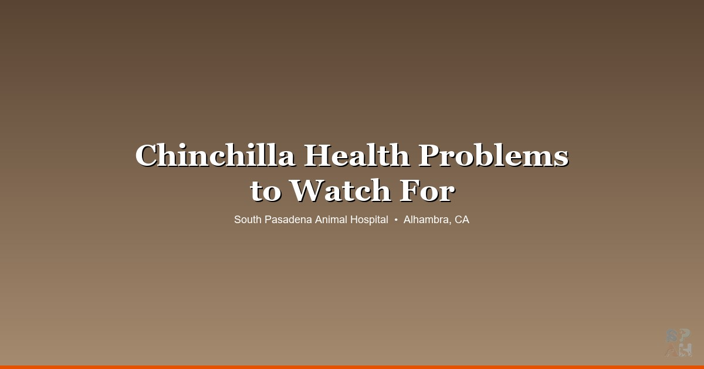

April 8, 2026 · 8 min read
Chinchilla Health Problems: What Every Owner Should Watch For 🐸

Chinchillas are tougher than they look. They're built for high-altitude desert life, they can jump three feet straight up, and they've got the densest fur of almost any land mammal — somewhere around 20,000 hairs per square centimeter. Pretty incredible animals.
But when something goes wrong, chinchillas go downhill fast. And here's the other problem: finding a vet in the San Gabriel Valley who actually sees chinchillas on a regular basis is genuinely hard. Most clinics around Alhambra, Pasadena, and South Pasadena are set up for dogs and cats. A chinchilla walks in and the staff isn't always sure what to do with it.
We see chinchillas at our Alhambra exotic vet clinic regularly enough to know what the common problems look like, how they show up, and how fast you need to act. Here's what to watch for.
Dental Disease — The Number One Issue
If there's one thing chinchilla owners need to understand, it's this: all of their teeth grow continuously. Not just the front incisors — the molars too. And when those teeth don't wear down properly, things go bad fast.
Malocclusion — where the teeth grow out of alignment and don't meet correctly — is extremely common in chinchillas. It can be genetic, it can be from a diet that's too soft, or it can just develop over time. The molars grow inward and develop sharp points called spurs that dig into the tongue and cheeks. The chin can't eat. It hurts. And because chinchillas are prey animals, they hide the pain until they physically can't anymore.
Signs to watch for:
- Drooling or a wet patch under the chin ("slobbers")
- Dropping food or approaching food but not actually eating
- Weight loss — even gradual
- Pawing at the mouth
- Smaller or fewer droppings
We probably see dental cases in chinchillas more than any other single issue. If your chin is drooling or you notice a wet chin, don't wait to see if it clears up. It won't. Come in.
Prevention: unlimited timothy hay. That's the single best thing you can do. The chewing motion on long-strand hay wears the molars down naturally. Pellets alone don't do this. Treats definitely don't do this. Hay, hay, hay.
Heat Stress — The SoCal Problem
This is the one that scares us the most for chinchilla owners in the San Gabriel Valley, because it's entirely environmental and entirely preventable.
Chinchillas are adapted to the Andes mountains. Cool, dry, high altitude. Their incredibly dense fur is perfect for 50°F nights at 14,000 feet. It is not designed for Alhambra in August.
Anything above 75°F is uncomfortable for a chinchilla. Above 80°F is dangerous. Above 85°F can be fatal.
That means if you live anywhere in the SGV — Pasadena, Highland Park, San Gabriel, South Pasadena — your air conditioning is not optional. It's a medical necessity. We've seen chinchillas come in with heat stroke during summer power outages and September heat waves when people thought it was "cooling down." It wasn't cooling down enough.
Signs of heat stress:
- Red ears (the ears are where chinchillas dump excess heat)
- Lying flat on their side, stretched out
- Drooling
- Rapid or labored breathing
- Lethargy — not responding when you approach
If your AC goes out and it's over 80°F inside, your chinchilla needs to be somewhere cool immediately. A friend's house, your car with the AC running, a bathroom with a portable AC unit — anywhere that's below 75. Granite or marble cooling slabs help as a supplement, but they are not a substitute for actual air conditioning. Don't rely on them alone.
GI Problems
Chinchilla digestive systems are designed for one thing: processing a whole lot of fiber, very efficiently. When you mess with that formula — too many treats, dried fruit, too many pellets, not enough hay — things go wrong.
Bloat is the acute fear. A chinchilla with a bloated belly is in serious pain and it can become life-threatening. You'll see them hunching, pressing their belly to the floor, not wanting to move. Sometimes they'll grind their teeth audibly — that's not contentment, that's pain.
GI stasis — where the gut slows down or stops — is the other concern. Similar to rabbits. Reduced or absent droppings, not eating, lethargy.
A chinchilla's gut is designed for a boring diet. That's not a flaw — that's the design. Unlimited hay, a small amount of pellets (plain timothy-based, no added fruit or seeds), and fresh water. That's it. Raisins, yogurt drops, dried banana chips — the pet store sells them, but that doesn't mean they're good. We'd rather your chin be bored at mealtime and healthy than entertained and sick.
Respiratory Infections
Chinchillas need dust baths — it's how they keep their fur clean and healthy. That part is non-negotiable. But the rest of their environment needs to have good airflow and low humidity.
We see respiratory infections in chinchillas who live in cramped spaces with poor ventilation. A cage in a closet, a spare bedroom with the door always closed, a corner with no air movement. Add in Southern California's occasional humidity spikes and you've got conditions that breed respiratory problems.
Signs to watch for:
- Nasal discharge — any visible wetness around the nose
- Sneezing that's frequent, not just occasional
- Wheezing or clicking when they breathe
- Labored breathing — you can see the effort
- Lethargy and not eating (these almost always go together)
One thing we tell chin owners: the dust bath itself is fine and necessary. Just don't leave it in the cage 24/7 — 10 to 15 minutes a few times a week is plenty. Leaving it in there means they roll in it constantly, and the dust in the air accumulates if the room doesn't have good airflow.
Fur Problems
Chinchilla fur is extraordinary, and when something goes wrong with it, owners tend to notice quickly.
Fur slip is the one that panics people. You pick up your chinchilla or they get startled, and a whole clump of fur just releases in your hand. It looks alarming. It's actually a survival mechanism — in the wild, it helps them escape predators. The fur grows back, and it's usually not a medical concern unless it's happening constantly from chronic stress.
Fur chewing is the one that concerns us more. If your chinchilla is chewing its own fur or a cage-mate's fur, creating patchy, uneven spots, that's usually a sign something environmental is off. Boredom, stress, a cage that's too small, not enough stimulation, or sometimes a nutritional imbalance. It's worth a vet visit to rule out medical causes and talk through the setup.
Ringworm shows up occasionally too — circular patches of hair loss, sometimes with flaky or crusty skin. This one is contagious (to humans too), so if you see it, come in sooner rather than later.
When to Wait vs. When to Come In
Chinchillas have a shorter window between "something's a little off" and "this is serious" than most people expect. Here's a rough guide:
Watch and monitor (a day or so):
- Slightly less active than usual but still eating normally
- One episode of soft stool that resolves on its own
- A single fur slip from being startled
Come in within a day or two:
- Eating less for 24+ hours
- Drooling or wet chin (dental)
- Fur chewing that's getting worse
- Sneezing with any discharge
- Patches of hair loss that aren't from fur slip
Come in today — don't wait:
- Not eating at all
- No droppings for 12+ hours
- Bloated or hard belly
- Labored breathing or open-mouth breathing
- Signs of heat stress (red ears, lying flat, unresponsive)
- Lethargic, limp, or unable to stand
What Happens at a Chinchilla Vet Visit
If you've never brought a chinchilla to the vet, here's the quick version: it's fast, because it has to be. Chinchillas stress easily, and we don't want to make things worse by dragging it out.
We'll weigh them (weight trends tell us a lot), do a physical exam — check the teeth as best we can externally, feel the belly, listen to the lungs, look at the fur and skin. We'll ask about diet, cage setup, room temperature, and what you've been noticing.
For transport: bring them in a small carrier with some of their own bedding. Keep the car cool. If it's summer, blast the AC before you put them in. Don't leave them in the car, even for a minute. A parked car in Alhambra in July can hit 130°F inside in under ten minutes.
Finding a Vet Who Actually Sees Chinchillas
This is the real challenge for most chin owners in Los Angeles. You call around, and most clinics either say "we don't see chinchillas" or "we can try." You want the one that says "yeah, we see them regularly."
We see chinchillas at our Alhambra clinic alongside rabbits, guinea pigs, hamsters, and other small mammals. If you're in South Pasadena, Pasadena, Highland Park, or San Gabriel and you've been putting off finding a vet for your chin because you couldn't find the right fit — give us a call at (626) 441-1314 or book online.